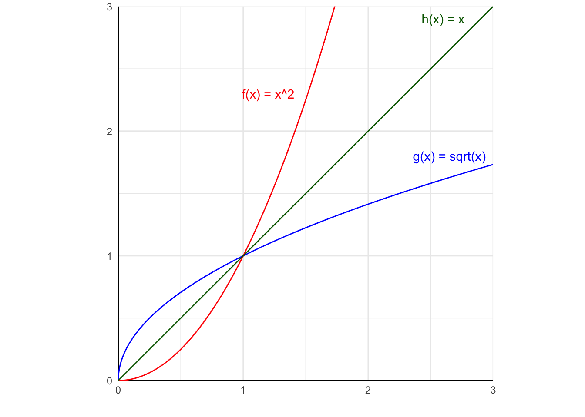
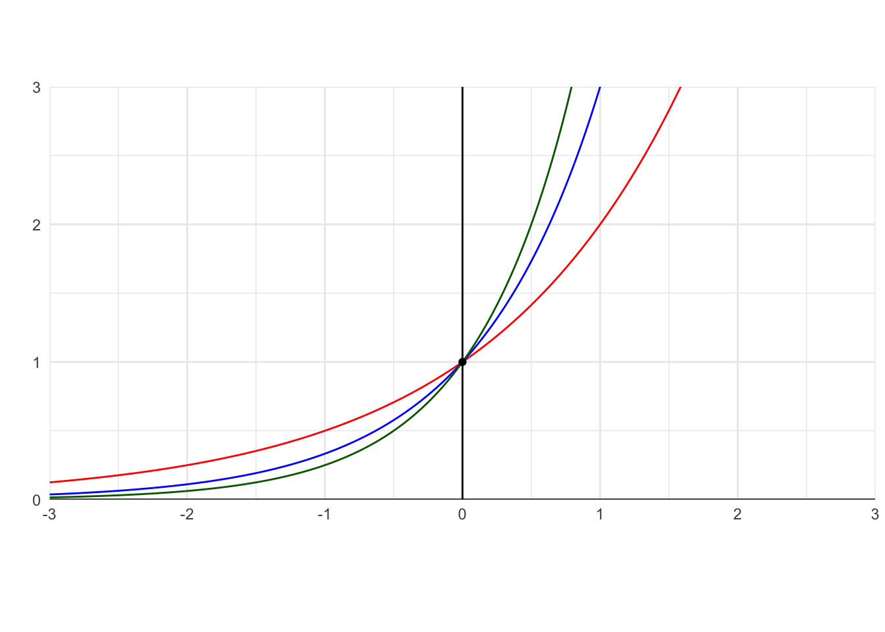
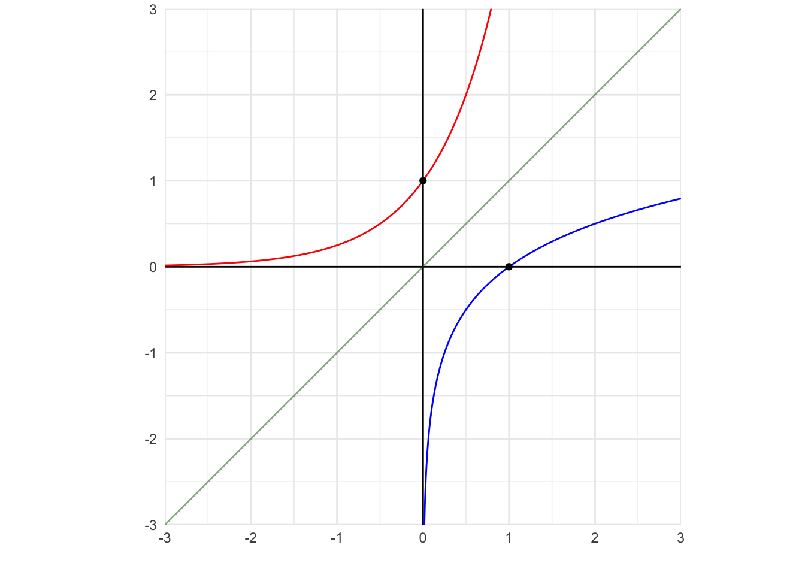
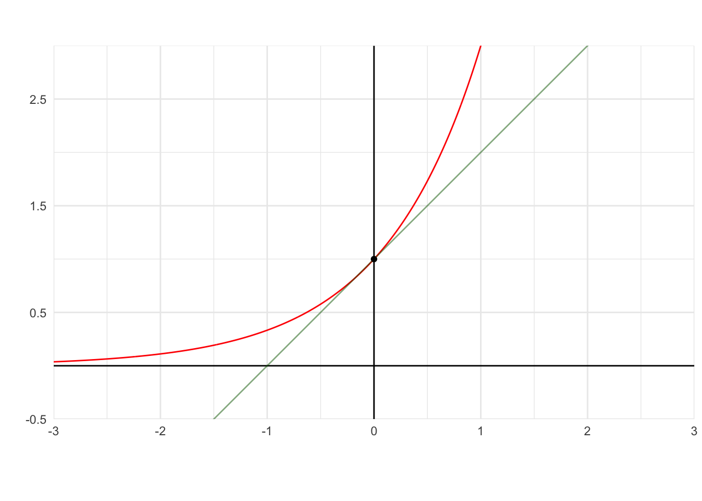

10 Derivadas - Parte 2
Anotações das aulas
TO DO - P37. Regra da cadeia
Sejam \(f\) e \(g\) funções deriváveis em \(p\) e \(g(p)\) respectivamente. Mostre que \(h(x)\) é derivável em \(p\) e que \(h'(p) = f(g(p')) . g'(p)\).
É uma demonstração grande! Copiar da aula de 31/03.
P38. Calcule \(h'(x)\) onde:
1. \(h(x) = 10\)
Função constante.
\(h'(x) = 0\)
2. \(h(x) = x^8\)
Regra da potência.
\(h'(x) = 8 \cdot x^7\)
3. \(h(x) = 7 \cdot x^8\)
Produto de uma função constante por uma função derivável.
\(h'(x) = 7 \cdot 8 \cdot x^7 = 56 \cdot x^7\)
4. \(h(x) = \sin x \cdot x^8\)
Produto de duas funções deriváveis.
\(h'(x) = \cos x \cdot x^8 + \sin x \cdot 8 \cdot x^7\)
5. \(h(x) = \sin x + x^8\)
Soma de duas funções deriváveis.
\(h'(x) = \cos x + 8 \cdot x^7\)
6. \(h(x) = \frac{\sin x}{x^8}\)
Regra do quociente.
\[ h'(x) = \frac{\cos x \cdot x^8 - \sin x \cdot 8 \cdot x^7}{(x^8)^2} \]
Simplificando:
\[ h'(x) = \frac{(\cos x) \cdot x^8 - \sin x \cdot (8 \cdot x^7)}{x^{16}} \]
7. \(h(x) = \sin x\)
\(h'(x) = \cos x\)
Isso foi demonstrado na aula passada (ver exercício 36.2).
8. \(h(x) = \cos x\)
Podemos reescrever a função como:
\[h(x) = \cos x= \sin(x + \frac{\pi}{2})\]
Observação 1: Como chegamos na expressão acima?
\[ \sin (a + b) = \sin a \cdot \cos b + \cos a \cdot \sin b \]
Assim, podemos aplicar a regra acima:
\[ \sin (x + \frac{\pi}{2}) = \sin x \cdot \cos(\frac{\pi}{2}) + \cos x \cdot \sin(\frac{\pi}{2}) \]
\[ \sin (x + \frac{\pi}{2}) = \sin x \cdot \cancelto{0}{\cos(\frac{\pi}{2})} + \cos x \cdot \cancelto{1}{\sin(\frac{\pi}{2})} \] \[ \sin (x + \frac{\pi}{2}) = \cos x \]
Assim, podemos derivar a função \(h(x) = \sin(x + \frac{\pi}{2})\). Para isso, utilizamos a regra da cadeia:
Derivada de \(x + \frac{\pi}{2}\) é 1.
\[ h'(x) = \cos(x + \frac{\pi}{2}) \cdot 1 = -\sin x \]
Observação 2: Como simplificamos a expressão acima?
\[ \cos(a + b) = \cos a \cdot \cos b - \sin a \cdot \sin b \] Substituindo \(a\) por \(x\) e \(b\) por \(\frac{\pi}{2}\):
\[ \cos(x + \frac{\pi}{2}) = \cos x \cdot \cos(\frac{\pi}{2}) - \sin x \cdot \sin(\frac{\pi}{2}) \]
Podemos simplificar:
\[ = \cos x \cdot \cancelto{0}{\cos(\frac{\pi}{2})} - \sin x \cdot \cancelto{1}{\sin(\frac{\pi}{2})} = -\sin x \]
Portanto: \(h'(x) = -\sin x\)
9. \(h(x) = \tan x\)
Podemos reescrever a função como: \(h(x) = \frac{\sin x}{\cos x}\). Agora podemos aplicar a regra do quociente.
\[ h'(x) = \frac{\cos x \cdot \cos x - (-\sin x) \cdot \sin x}{\cos^2 x} \]
Simplificando:
\[ h'(x) = \frac{\cos^2 x + \sin^2 x}{\cos^2 x} \]
Segundo a identidade trigonométrica, temos que:
\[ \cos^2 x + \sin^2 x = 1 \]
Podemos substituir na equação anterior:
\[ h'(x) = (\frac{1}{\cos x})^2 = (\sec x)^2 = \sec^2 x \]
10. \(h(x) = \sec x\)
Podemos reescrever como:
\[ h(x) = \sec x = \frac{1}{\cos x} \]
Agora podemos aplicar a regra do quociente.
\[ h'(x) = \frac{0 \cdot \cos x - 1 \cdot (-\sin x)}{cos^2 x} \] Simplificando:
\[ h'(x) = \frac{\sin x}{\cos^2 x} \] Podemos reescrever a expressão acima como:
\[ h'(x) = \frac{\sin x}{\cos x} \cdot \frac{1}{\cos x} \]
Lembrando que \(\tan x = \frac{\sin x}{\cos x}\) e \(\sec x = \frac{1}{\cos x}\), podemos reescrever a expressão como:
\[ h'(x) = \tan x \cdot \sec x \]
11. \(h(x) = \sin (x^8)\)
Função composta, usar regra da cadeia.
Derivar a função de fora calculada na de dentro, vezes a derivada da de dentro.
\[ h'(x) = \cos(x^8) \cdot 8 \cdot x^7 \]
11’. \(h(x) = \sin (\sin x)\)
Também é uma função composta, usar regra da cadeia.
\[ h'(x) = \cos(\sin x) \cdot \cos x \]
12. \(h(x) = \cos (\sin x)\)
Função composta, usar regra da cadeia.
\[ h'(x) = -\sin(\sin x) \cdot \cos x \]
TO DO - 12’. \(h(x) = (\cos x)^{\sin x}\)
Como derivar uma função elevada a outra função? Vamos explorar em breve!
13. \(h(x) = e ^x\)
\[ h'(x) = e^x \]
14. \(h(x) = \ln x\)
Isso é mais explorado na aula seguinte (documentada em derivadas (parte 3)).
\[ H'(x) = \frac{1}{x} \]
P39.
Desenhe os gráficos de \(f(x) = x^2\) e \(g(x) = \sqrt{x}\) para \(x \ge 0\).
As funções \(f\) e \(g\) são inversas uma da outra.
- \(\sqrt{x^2} = x\) para \(x \ge 0\).
Observação 1
Se \(f\) e \(g\) são funções inversas uma da outra, então:
os gráficos de \(f\) e \(g\) são simétricos em relação à reta \(y = x\).
\(g(f(x)) = x, \forall x \in \mathbb{D_{f}}\) e \(f(g(y)) = y, \forall y \in \mathbb{D_{g}}\).
P40.
Desenhe os gráficos de \(f(x) = a^x\), com \(a>1\) e defina a inversa de \(f\).
- \(f(x) = a^x\):

O logaritmo de base \(a\) é a função inversa de \(f(x) = a^x\). Logaritmo é a inversa da função exponencial!
- \(f(x) = a^x\) em vermelho, \(g(x) = \log_a x\) em azul e \(h(x) = x\) em verde:

Propriedades da função exponencial
\[a^0 = 1\]
\[a^{x_1} \cdot a^{x_2} = a^{x_1 + x_2}\]
\[\frac{a^{x_1}}{a^{x_2}} = a ^{x_1 - x_2}\]
\[(a^{x_1})^{x_2} = a^{x_1 \cdot x_2}\]
\[ a^{x_1} = a^{x_2} \Longleftrightarrow x_1 = x_2 \]
Propriedades do logaritmo
\[\log_a 1 = 0\]
\[\log_a a = 1\]
\[\log_a b.c = \log_a b + \log_a c\]
\[\log_a \frac{b}{c} = \log_a b - \log_a c\]
Muito importante!!!
\[ \log_a b^c = c \cdot \log_a b \]
\[ y = a ^{\log_a y} \]
\[ \log_a x = y \Longleftrightarrow a^y = x \]
P41.
Determine \(a>1\) tal que a reta tangente ao gráfico de \(f\) no ponto \((0, f(0))\) forma com o eixo \(Ox\) um ângulo de \(45^{\circ}\).
Se o ângulo formado com o eixo \(Ox\) é de \(45^{\circ}\), então a tangente do ângulo é igual a 1 (ou seja, a inclinação da reta tangente no ponto \((0, f(0))\) é 1):
\[ m = \tan 45^{\circ} = \frac{\sin 45^{\circ}}{\cos 45^{\circ}} = 1 \]
(Lembrando que \(\sin 45^{\circ} = \frac{\sqrt{2}}{2}\) e \(\cos 45^{\circ} = \frac{\sqrt{2}}{2}\)).

Como
\[ f(x) = a^x \]
temos
\[ 1 = f'(0) = \lim_{x \to 0^+} \frac{f(x) - f(0)}{h} = \lim_{x \to 0^+} \frac{a^x - 1}{x} \]
Mudança de variável:
Seja \(h = a^x - 1\), então:
\[ 1 + h = a^x \implies \log_a (1 + h) = \log_a (a^x) \]
\[ \log_a (1 + h) = x \cdot \cancelto{1}{\log_a a} \]
\[ \log_a (1 + h) = x \cdot 1 = x \]
Voltando na substituição de variável:
\[ 1 = \lim_{h \to 0^+} \frac{h}{\log(1 + h)} \]
Usando mudança de base do log: \(\log_a(1+h)=\dfrac{\ln(1+h)}{\ln(a)}\):
TODO: Preciso revisar esse conceito aqui!! Mudança de base do logaritmo.
\[ = \lim_{h \to 0^+} \frac{h}{\frac{\ln(1 + h)}{\ln a}} \]
Manipulação algébrica: \[ = \lim_{h\to0^+} \frac{h}{\ln(1 + h)} \cdot \frac{\ln a}{1} \]
\[ = \lim_{h\to0^+} \frac{h\,\ln a}{\ln(1 + h)} \]
TO DO: Não entendi pq aconteceu isso. Estudar propriedade do logaritmo.
\[ = \ln a \cdot \lim_{h\to0^+} \frac{h}{\ln(1 + h)} \]
Dividindo numerador e denominador por \(h\) dentro do limite:
\[ = \lim_{h\to0^+} \frac{h}{\ln(1 + h)} = \lim_{h\to0^+} \frac{\frac{h}{h}}{\frac{\ln(1 + h)}{h}} \]
\[ = \lim_{h\to0^+} \frac{1}{\cancelto{1}{\frac{\ln(1 + h)}{h}}} = \frac{1}{1} = 1 \]
pois \(\displaystyle\lim_{u\to0}\frac{\ln(1+u)}{u}=1\). Assim:
\[ 1 = \ln a \cdot 1 = \ln a \quad\Longrightarrow\quad a = e. \]
Como \(e\approx2{,}718>1\), concluímos:
\[ \boxed{a = e}. \]